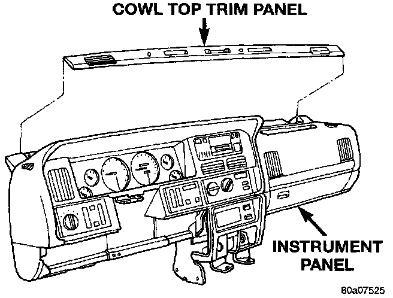
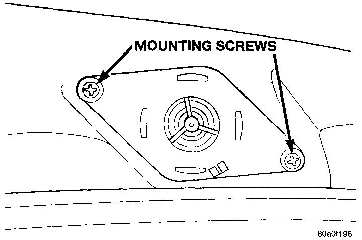

Instrument Panel
WARNING: ON VEHICLES EQUIPPED WITH AIR-BAGS, REFER TO AIR BAGS AND SEAT BELTS/AIR BAGS BEFORE ATTEMPTING ANY STEERING WHEEL, STEERING COLUMN, OR INSTRUMENT PANEL COMPONENT DIAGNOSIS OR SERVICE. FAILURE TO TAKE THE PROPER PRECAUTIONS COULD RESULT IN ACCIDENTAL AIRBAG DEPLOYMENT AND POSSIBLE PERSONAL INJURY.1. Disconnect and isolate the battery negative cable.
Cowl Top Trim Remove/Install:

2. Using a wide flat-bladed tool such as a trim stick, pry the cowl top trim panel off of the instrument panel top pad.
3. Pull the panel up far enough to unplug the wire harness connector for the solar sensor, or to remove the solar sensor from the cowl top trim, if the vehicle is so equipped.
4. Remove the cowl top trim panel from the vehicle.
5. Unplug the speaker wire harness connector.
Instrument Panel Speaker Remove/Install:

6. Remove the two screws that secure the speaker to the instrument panel.
7. Remove the speaker from the instrument panel.
8. Reverse the removal procedures to install.